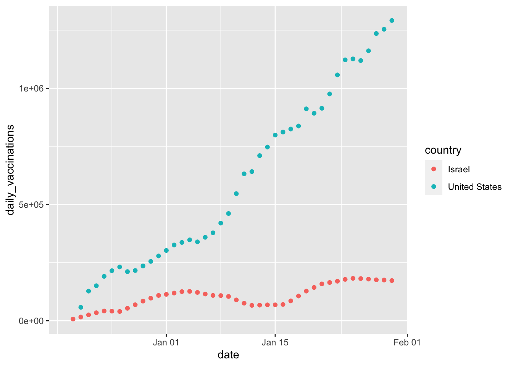

Module 6 Intro to Tidyverse
6.1 Before Module #6
Read Advice to Young (and Old) Programmers: A Conversation with Hadley Wickham by Philip Waggoner (2,599 words, 10 minutes)
6.2 What are R Packages?
An R package contains functions, and it might contain data. There are a lot of R packages out here (check the Comprehensive R Archive Network, i.e., CRAN, for a full list). That is one of the beautiful things about R, anyone can create an R package to share their code.
6.3 Installing Packages
The function to install packages in R is install.packages(). We will be working with TidyVerse extensively in this course, which is a collection of R packages carefully designed for data science.
Open your RStudio. In your console, enter the following to install tidyverse (this may take a while).
You need to install any package only once (remember to check for new package versions and to keep your packages updated). However, with every new R session, you need to load the packages you are going to use by using the library() function (a library is an installed R package in your computer).
Note that when calling the install.packages() function you need to enter the package name between quotation marks (e.g., “tidyverse”). When you call the library() function, you don’t use quotation marks (e.g., tidyverse).
6.4 Before You Load your Data
Although we are working within an R project, which sets the working directory automatically for you, it’s good practice to check what folder you are working from by calling the getwd() function.
## [1] "/Users/adriana/Desktop/ESOC214/Spring 2021/ESOC_214_Spring_2021"You can list the contents of your working directory by using the dir() function.
We are going to create a data folder in our project, to keep things organized. Today we will be working with data on COVID-19 World Vaccination Progress. I cleaned up this data set already (no need for data tidying for now).
You can now list the contents of your data folder with the dir() function with a string that specifies the folder as a parameter.
## [1] "clean_beer_awards.csv"
## [2] "country_vaccinations.csv"
## [3] "elnino.csv"
## [4] "GlobalLandTemperaturesByCountry.csv"
## [5] "GlobalLandTemperaturesByMajorCity.csv"
## [6] "groundhog_day.csv"
## [7] "nfl_salary.xlsx"
## [8] "olympic_history_athlete_events.csv"
## [9] "olympic_history_noc_regions.csv"
## [10] "passwords.csv"
## [11] "president_county_candidate.csv"
## [12] "spotify_songs_clean.csv"
## [13] "spotify_songs.csv"
## [14] "tweets.tsv"
## [15] "us_avg_tuition.xlsx"
## [16] "women_in_labor_force.csv"6.5 What’s our question again?
The Kaggle page on COVID-19 World Vaccination Progress lists the following questions:
- Which country is using what vaccine?
- In which country the vaccination program is more advanced?
- Which country has vaccinated more people per day? (in terms of per hundred)
6.6 Load Data with Tidyverse
We will use the read_csv() function from the readr package (which is part of tidyverse) to read data in. Be careful, there’s a similar function that is read.csv() from base R. We do want to use the function with the _ (i.e., read_csv())
## Parsed with column specification:
## cols(
## country = col_character(),
## iso_code = col_character(),
## date = col_date(format = ""),
## total_vaccinations = col_double(),
## people_vaccinated = col_double(),
## people_fully_vaccinated = col_double(),
## daily_vaccinations_raw = col_double(),
## daily_vaccinations = col_double(),
## total_vaccinations_per_hundred = col_double(),
## people_vaccinated_per_hundred = col_double(),
## people_fully_vaccinated_per_hundred = col_double(),
## daily_vaccinations_per_million = col_double(),
## vaccines = col_character(),
## source_name = col_character(),
## source_website = col_character()
## )** CHALLENGE**
Reading warnings - R often prints out warnings in red (these are not always errors). What information did you get when loading your data?
6.7 Inspect Your Data
As with any other programming language, there are multiple ways to doing anything. As such, there are multiple ways of inspecting your data in R. Here are some of my favorite ways of inspecting my data:
## Rows: 1,816
## Columns: 15
## $ country <chr> "Argentina", "Argentina", "Argenti…
## $ iso_code <chr> "ARG", "ARG", "ARG", "ARG", "ARG",…
## $ date <date> 2020-12-29, 2020-12-30, 2020-12-3…
## $ total_vaccinations <dbl> 700, NA, 32013, NA, NA, NA, 39599,…
## $ people_vaccinated <dbl> NA, NA, NA, NA, NA, NA, NA, NA, NA…
## $ people_fully_vaccinated <dbl> NA, NA, NA, NA, NA, NA, NA, NA, NA…
## $ daily_vaccinations_raw <dbl> NA, NA, NA, NA, NA, NA, NA, NA, NA…
## $ daily_vaccinations <dbl> NA, 15656, 15656, 11070, 8776, 740…
## $ total_vaccinations_per_hundred <dbl> 0.00, NA, 0.07, NA, NA, NA, 0.09, …
## $ people_vaccinated_per_hundred <dbl> NA, NA, NA, NA, NA, NA, NA, NA, NA…
## $ people_fully_vaccinated_per_hundred <dbl> NA, NA, NA, NA, NA, NA, NA, NA, NA…
## $ daily_vaccinations_per_million <dbl> NA, 346, 346, 245, 194, 164, 143, …
## $ vaccines <chr> "Sputnik V", "Sputnik V", "Sputnik…
## $ source_name <chr> "Ministry of Health", "Ministry of…
## $ source_website <chr> "http://datos.salud.gob.ar/dataset…## country iso_code date total_vaccinations
## Length:1816 Length:1816 Min. :2020-12-13 Min. : 0
## Class :character Class :character 1st Qu.:2021-01-05 1st Qu.: 19315
## Mode :character Mode :character Median :2021-01-14 Median : 92706
## Mean :2021-01-12 Mean : 831690
## 3rd Qu.:2021-01-22 3rd Qu.: 422864
## Max. :2021-01-30 Max. :29577902
## NA's :595
## people_vaccinated people_fully_vaccinated daily_vaccinations_raw
## Min. : 0 Min. : 2 Min. : 0
## 1st Qu.: 24773 1st Qu.: 3317 1st Qu.: 1802
## Median : 112986 Median : 11670 Median : 8923
## Mean : 819164 Mean : 199311 Mean : 59342
## 3rd Qu.: 487814 3rd Qu.: 107978 3rd Qu.: 44013
## Max. :24064165 Max. :5259693 Max. :1693241
## NA's :868 NA's :1348 NA's :814
## daily_vaccinations total_vaccinations_per_hundred
## Min. : 1 Min. : 0.000
## 1st Qu.: 1510 1st Qu.: 0.330
## Median : 5776 Median : 1.120
## Mean : 49187 Mean : 3.416
## 3rd Qu.: 27360 3rd Qu.: 2.850
## Max. :1291416 Max. :54.690
## NA's :68 NA's :595
## people_vaccinated_per_hundred people_fully_vaccinated_per_hundred
## Min. : 0.000 Min. : 0.0000
## 1st Qu.: 0.360 1st Qu.: 0.0400
## Median : 1.350 Median : 0.1500
## Mean : 3.482 Mean : 0.7789
## 3rd Qu.: 3.033 3rd Qu.: 0.6725
## Max. :38.190 Max. :19.9700
## NA's :868 NA's :1348
## daily_vaccinations_per_million vaccines source_name
## Min. : 0.0 Length:1816 Length:1816
## 1st Qu.: 287.0 Class :character Class :character
## Median : 747.5 Mode :character Mode :character
## Mean : 1738.1
## 3rd Qu.: 1354.2
## Max. :30869.0
## NA's :68
## source_website
## Length:1816
## Class :character
## Mode :character
##
##
##
## ## [1] "country" "iso_code"
## [3] "date" "total_vaccinations"
## [5] "people_vaccinated" "people_fully_vaccinated"
## [7] "daily_vaccinations_raw" "daily_vaccinations"
## [9] "total_vaccinations_per_hundred" "people_vaccinated_per_hundred"
## [11] "people_fully_vaccinated_per_hundred" "daily_vaccinations_per_million"
## [13] "vaccines" "source_name"
## [15] "source_website"## [1] "country" "iso_code"
## [3] "date" "total_vaccinations"
## [5] "people_vaccinated" "people_fully_vaccinated"
## [7] "daily_vaccinations_raw" "daily_vaccinations"
## [9] "total_vaccinations_per_hundred" "people_vaccinated_per_hundred"
## [11] "people_fully_vaccinated_per_hundred" "daily_vaccinations_per_million"
## [13] "vaccines" "source_name"
## [15] "source_website"## [1] "Argentina" "Austria" "Bahrain"
## [4] "Belgium" "Bermuda" "Brazil"
## [7] "Bulgaria" "Canada" "Chile"
## [10] "China" "Costa Rica" "Croatia"
## [13] "Cyprus" "Czechia" "Denmark"
## [16] "Ecuador" "England" "Estonia"
## [19] "Finland" "France" "Germany"
## [22] "Gibraltar" "Greece" "Hungary"
## [25] "Iceland" "India" "Indonesia"
## [28] "Ireland" "Isle of Man" "Israel"
## [31] "Italy" "Kuwait" "Latvia"
## [34] "Lithuania" "Luxembourg" "Malta"
## [37] "Mexico" "Myanmar" "Netherlands"
## [40] "Northern Cyprus" "Northern Ireland" "Norway"
## [43] "Oman" "Panama" "Poland"
## [46] "Portugal" "Romania" "Russia"
## [49] "Saudi Arabia" "Scotland" "Serbia"
## [52] "Seychelles" "Singapore" "Slovakia"
## [55] "Slovenia" "Spain" "Sri Lanka"
## [58] "Sweden" "Switzerland" "Turkey"
## [61] "United Arab Emirates" "United Kingdom" "United States"
## [64] "Wales"## [1] "Sputnik V"
## [2] "Pfizer/BioNTech"
## [3] "Pfizer/BioNTech, Sinopharm"
## [4] "Moderna, Pfizer/BioNTech"
## [5] "Oxford/AstraZeneca, Sinovac"
## [6] "CNBG, Sinovac"
## [7] "Oxford/AstraZeneca, Pfizer/BioNTech"
## [8] "Covaxin, Oxford/AstraZeneca"
## [9] "Sinovac"
## [10] "Oxford/AstraZeneca"
## [11] "Pfizer/BioNTech, Sinovac"
## [12] "Pfizer/BioNTech, Sinopharm, Sputnik V"
## [13] "Oxford/AstraZeneca, Sinopharm"CHALLENGE
Which variables are numeric? Which are categorical?
daily_vaccinations_raw: daily change in the total number of doses administered. It is only calculated for consecutive days. This is a raw measure provided for data checks and transparency, but we strongly recommend that any analysis on daily vaccination rates be conducted using daily_vaccinations instead.
There might be inconsistencies in both data - daily & total (and not only for Romania) - the data is based on collected data from national agencies by the main aggregator. It might be that data collected / day to be subsequently corrected (from alternative sources) when they calculate the total. Or the other way around. In any case, I will refine my cleaning.
6.8 The Pipe
We will be using the package dplyr (which is also part of tidyverse) to do an exploratory analysis of our data.
The package dplyr most used function is %>% (called the pipe). The pipe allows you to “pipe” (or redirect) objects into functions. (hint: use ctrl+shift+m or cmd+shift+m as a shortcut for typing %>%).
Here’s how to pipe the avocado_data object into the summary() function
## country iso_code date total_vaccinations
## Length:1816 Length:1816 Min. :2020-12-13 Min. : 0
## Class :character Class :character 1st Qu.:2021-01-05 1st Qu.: 19315
## Mode :character Mode :character Median :2021-01-14 Median : 92706
## Mean :2021-01-12 Mean : 831690
## 3rd Qu.:2021-01-22 3rd Qu.: 422864
## Max. :2021-01-30 Max. :29577902
## NA's :595
## people_vaccinated people_fully_vaccinated daily_vaccinations_raw
## Min. : 0 Min. : 2 Min. : 0
## 1st Qu.: 24773 1st Qu.: 3317 1st Qu.: 1802
## Median : 112986 Median : 11670 Median : 8923
## Mean : 819164 Mean : 199311 Mean : 59342
## 3rd Qu.: 487814 3rd Qu.: 107978 3rd Qu.: 44013
## Max. :24064165 Max. :5259693 Max. :1693241
## NA's :868 NA's :1348 NA's :814
## daily_vaccinations total_vaccinations_per_hundred
## Min. : 1 Min. : 0.000
## 1st Qu.: 1510 1st Qu.: 0.330
## Median : 5776 Median : 1.120
## Mean : 49187 Mean : 3.416
## 3rd Qu.: 27360 3rd Qu.: 2.850
## Max. :1291416 Max. :54.690
## NA's :68 NA's :595
## people_vaccinated_per_hundred people_fully_vaccinated_per_hundred
## Min. : 0.000 Min. : 0.0000
## 1st Qu.: 0.360 1st Qu.: 0.0400
## Median : 1.350 Median : 0.1500
## Mean : 3.482 Mean : 0.7789
## 3rd Qu.: 3.033 3rd Qu.: 0.6725
## Max. :38.190 Max. :19.9700
## NA's :868 NA's :1348
## daily_vaccinations_per_million vaccines source_name
## Min. : 0.0 Length:1816 Length:1816
## 1st Qu.: 287.0 Class :character Class :character
## Median : 747.5 Mode :character Mode :character
## Mean : 1738.1
## 3rd Qu.: 1354.2
## Max. :30869.0
## NA's :68
## source_website
## Length:1816
## Class :character
## Mode :character
##
##
##
## The pipe allows us to apply multiple functions to the same object.
Let’s start by selecting one column in our data.
## # A tibble: 1,816 x 1
## vaccines
## <chr>
## 1 Sputnik V
## 2 Sputnik V
## 3 Sputnik V
## 4 Sputnik V
## 5 Sputnik V
## 6 Sputnik V
## 7 Sputnik V
## 8 Sputnik V
## 9 Sputnik V
## 10 Sputnik V
## # … with 1,806 more rowsNow let’s add another pipe to get unique values in this column.
## # A tibble: 13 x 1
## vaccines
## <chr>
## 1 Sputnik V
## 2 Pfizer/BioNTech
## 3 Pfizer/BioNTech, Sinopharm
## 4 Moderna, Pfizer/BioNTech
## 5 Oxford/AstraZeneca, Sinovac
## 6 CNBG, Sinovac
## 7 Oxford/AstraZeneca, Pfizer/BioNTech
## 8 Covaxin, Oxford/AstraZeneca
## 9 Sinovac
## 10 Oxford/AstraZeneca
## 11 Pfizer/BioNTech, Sinovac
## 12 Pfizer/BioNTech, Sinopharm, Sputnik V
## 13 Oxford/AstraZeneca, Sinopharm6.9 Counting Categorical Variables
One of the functions I most use when exploring my data is count(), which you can combine with %>%.
## # A tibble: 13 x 2
## vaccines n
## <chr> <int>
## 1 CNBG, Sinovac 44
## 2 Covaxin, Oxford/AstraZeneca 16
## 3 Moderna, Pfizer/BioNTech 429
## 4 Oxford/AstraZeneca 5
## 5 Oxford/AstraZeneca, Pfizer/BioNTech 226
## 6 Oxford/AstraZeneca, Sinopharm 21
## 7 Oxford/AstraZeneca, Sinovac 15
## 8 Pfizer/BioNTech 864
## 9 Pfizer/BioNTech, Sinopharm 65
## 10 Pfizer/BioNTech, Sinopharm, Sputnik V 22
## 11 Pfizer/BioNTech, Sinovac 9
## 12 Sinovac 37
## 13 Sputnik V 63You can do the same adding group_by() to your pipeline.
## # A tibble: 13 x 2
## # Groups: vaccines [13]
## vaccines n
## <chr> <int>
## 1 CNBG, Sinovac 44
## 2 Covaxin, Oxford/AstraZeneca 16
## 3 Moderna, Pfizer/BioNTech 429
## 4 Oxford/AstraZeneca 5
## 5 Oxford/AstraZeneca, Pfizer/BioNTech 226
## 6 Oxford/AstraZeneca, Sinopharm 21
## 7 Oxford/AstraZeneca, Sinovac 15
## 8 Pfizer/BioNTech 864
## 9 Pfizer/BioNTech, Sinopharm 65
## 10 Pfizer/BioNTech, Sinopharm, Sputnik V 22
## 11 Pfizer/BioNTech, Sinovac 9
## 12 Sinovac 37
## 13 Sputnik V 63And instead of count() we can use the summarise() and n() functions.
## # A tibble: 13 x 2
## vaccines total
## <chr> <int>
## 1 CNBG, Sinovac 44
## 2 Covaxin, Oxford/AstraZeneca 16
## 3 Moderna, Pfizer/BioNTech 429
## 4 Oxford/AstraZeneca 5
## 5 Oxford/AstraZeneca, Pfizer/BioNTech 226
## 6 Oxford/AstraZeneca, Sinopharm 21
## 7 Oxford/AstraZeneca, Sinovac 15
## 8 Pfizer/BioNTech 864
## 9 Pfizer/BioNTech, Sinopharm 65
## 10 Pfizer/BioNTech, Sinopharm, Sputnik V 22
## 11 Pfizer/BioNTech, Sinovac 9
## 12 Sinovac 37
## 13 Sputnik V 63CHALLENGE
This last way of counting categorical variables (with
summarise()andn()) outputs a data frame that is slightly different from the previous too. What’s the difference?
6.10 Arrange
Tables are easier to read when then are arranges by some logical order. In the case of counts, we usually arrange by the count itself (e.g., n or total).
## # A tibble: 13 x 2
## vaccines total
## <chr> <int>
## 1 Oxford/AstraZeneca 5
## 2 Pfizer/BioNTech, Sinovac 9
## 3 Oxford/AstraZeneca, Sinovac 15
## 4 Covaxin, Oxford/AstraZeneca 16
## 5 Oxford/AstraZeneca, Sinopharm 21
## 6 Pfizer/BioNTech, Sinopharm, Sputnik V 22
## 7 Sinovac 37
## 8 CNBG, Sinovac 44
## 9 Sputnik V 63
## 10 Pfizer/BioNTech, Sinopharm 65
## 11 Oxford/AstraZeneca, Pfizer/BioNTech 226
## 12 Moderna, Pfizer/BioNTech 429
## 13 Pfizer/BioNTech 864The default order for arrange() is increasing. We can invert that by adding a minus (i.e., -) in front of the variable in arrange().
## # A tibble: 13 x 2
## vaccines total
## <chr> <int>
## 1 Pfizer/BioNTech 864
## 2 Moderna, Pfizer/BioNTech 429
## 3 Oxford/AstraZeneca, Pfizer/BioNTech 226
## 4 Pfizer/BioNTech, Sinopharm 65
## 5 Sputnik V 63
## 6 CNBG, Sinovac 44
## 7 Sinovac 37
## 8 Pfizer/BioNTech, Sinopharm, Sputnik V 22
## 9 Oxford/AstraZeneca, Sinopharm 21
## 10 Covaxin, Oxford/AstraZeneca 16
## 11 Oxford/AstraZeneca, Sinovac 15
## 12 Pfizer/BioNTech, Sinovac 9
## 13 Oxford/AstraZeneca 56.11 group_by + summarise
The combination of the group_by() and summarise() functions is very powerful. In addition to using the n() function to count how many rows per each category in our categorical variable, we can use other functions with numeric (i.e., quantitative) variable such as sum() and mean().
CHALLENGE
Take a moment to revisit the question we want to answer.
What do we want to find out?
How can we answer our question with this data?
What function (e.g.,
sum(),max(),mean()) do we use to answer our question? With what variables/columns?
Complete the code below.
country_vaccinations %>%
group_by(country) %>%
summarise(total_days = n(),
total_per_hundred = ____(____), na.rm = TRUE)Example of output that you might want to get to answer our question:
## # A tibble: 64 x 3
## country total_days total_per_hundred
## <chr> <int> <dbl>
## 1 Argentina 33 0.81
## 2 Austria 21 2.19
## 3 Bahrain 39 10.0
## 4 Belgium 33 2.45
## 5 Bermuda 14 4.71
## 6 Brazil 15 0.94
## 7 Bulgaria 33 0.59
## 8 Canada 22 2.48
## 9 Chile 38 0.35
## 10 China 44 1.58
## # … with 54 more rowsCHALLENGE add arrange() to the code block.
6.12 group_by + filter
The output above contains a lot of countries. We can keep just observations that are just from the United States by using the filter() function:
## # A tibble: 1 x 2
## vaccines n
## <chr> <int>
## 1 Moderna, Pfizer/BioNTech 42CHALLENGE Add a
filter()to your solution from the previous challenge.
Example of output that you might want to get:
## # A tibble: 2 x 3
## country total_days total_per_hundred
## <chr> <int> <dbl>
## 1 Israel 43 54.7
## 2 United States 42 8.946.13 Example of Plotting
For fun, here’s an example of plotting (we will be working extensively with plotting in the future).
country_vaccinations %>%
filter(country == "United States" |
country == "Israel") %>%
ggplot(aes(x = date,
y = daily_vaccinations,
color = country)) +
geom_point()## Warning: Removed 2 rows containing missing values (geom_point).